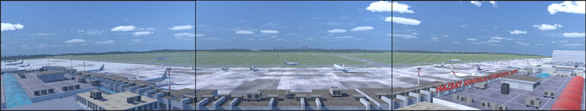
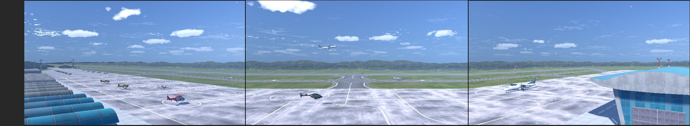
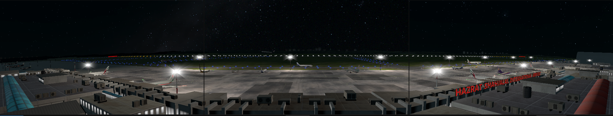
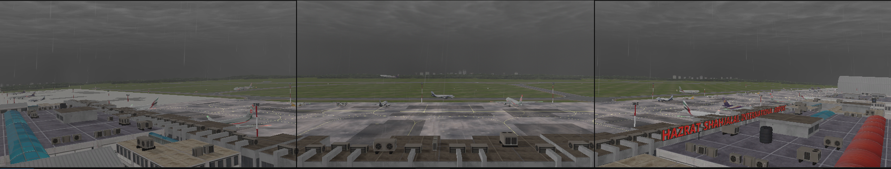

01. Introduction
1.1 System Overview
The BAF ATC Simulator is designed to provide a highly immersive and realistic environment for live, interactive air traffic control training. The system features a comprehensive 180-degree field of view, allowing trainees to monitor a vast portion of the airfield simultaneously, replicating the authentic experience of an actual control tower, as shown below:

1.2 System Architecture
The simulator operates as a distributed multi-node network, featuring three primary stations integrated with a 180-degree Panoramic Trio View designed to replicate actual airport tower view.
- Server Station: Acts as the central hub, managing the live 180-degree scenario, environmental conditions, and weather control systems.
- Arrival Station: Functions as a client node for real-time monitoring of arrival traffic, executing pseudo-pilot control commands, and triggering pre-recorded pilot voice communications.
- Departure Station: Functions as a client node for real-time monitoring of departure traffic, executing pseudo-pilot control commands, and triggering pre-recorded pilot voice communications.
- Panoramic Trio View: Consists of three large-scale high-definition displays connected to the server, which provide a seamless, panoramic 180-degree view that replicates the immersive perspective of an actual airport control tower.
1.3 Operational Airfield Scenarios
The simulator currently features two high-fidelity airport environments, with support for integrated day/night cycles and dynamic weather systems (e.g., fog, storms, and atmospheric effects like rainbows).
Hazrat Shahjalal International Airport (VGHS)

Jashore Airport (VGJR)

Night Operations

Adverse Weather Conditions

1.4 Training Philosophy
This simulator focuses on live, hands-on training to bridge the gap between theoretical knowledge and operational reality. By providing a highly interactive scenario-based environment, the system allows ATC students to practice real-world decision-making. Trainees can engage directly with the simulator, managing dynamic traffic situations and airport operations in a controlled yet authentic setting.
- Hands-on Experience: Practical engagement with ATC systems.
- Interactive Scenarios: Dynamic environments that mimic real-life challenges.
- Operational Readiness: Focused training to ensure students are prepared for actual air traffic control responsibilities.
1.5 Technical Stack
- Core Engine: Unity 6000.2.8f1
- Rendering Pipeline: Built-in Render Pipeline
- Networking Architecture: Fishnet Networking
- 3D Modeling & Design: Blender, 3ds Max
- UI/UX Design: Unity Native UI System
- Asset Creation & Texturing: Adobe Photoshop, Photopea
- Audio Engineering: Audacity
- Version Control & CI/CD: Git (GitHub, GitLab)
- Development Environment: Visual Studio 2022
- Target Operating System: Windows 10/11 Pro
1.6 Development Credits
- Developer: Azmi Studio
- Client: Bangladesh Air Force (BAF)
- Purpose: Providing an immersive environment for advanced ATC training.